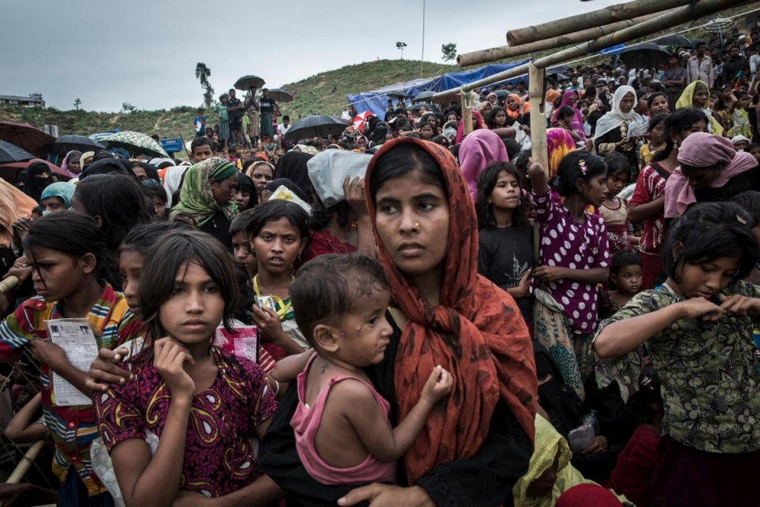

About Me
Hello! I’m Abrar Fahim. I am a data Scientist at Brunel University London. I have a Msc in Data Science and Analytics. I have completed Bsc in Computer Science and Engineering. I love finding insights from data and develop practical applicatation based on Data Sceience, Natural Language Processing.
Email
fahimabrar0@gamil.com
Location
United Kingdom
Professional Skills
Data Science
Natural Language Processing
Deep Learning
Python
Tensorflow
Statistics
Work Experience
Data Scientist at Brunel University London
May, 2015 - Present
Leverage agile frameworks to provide a robust synopsis for high level overviews. Iterative approaches to corporate strategy foster collaborative thinking to further the overall value proposition.
Computer Vision Intern at CityMaas
June, 2013 - May, 2015
Captioning Image for disabled people - using deep learning
Reviewed state of the art of the image captioning domain | Used transfer learning to extract the features from the images | Pre-trained embeddings for text data preparations | Generated six models based on CNNs and RNNs
Some captions generated by the best model are shown below,
Reviewed state of the art of the image captioning domain | Used transfer learning to extract the features from the images | Pre-trained embeddings for text data preparations | Generated six models based on CNNs and RNNs
Some captions generated by the best model are shown below,

 Machine Learning Engineer at Codephilics
Machine Learning Engineer at CodephilicsJan, 2011 - May, 2013
Celebrity Face Detector using CNN | Web Scrapping for Restaurant Data | Analyzed Sensor Data From Gaming Equipements
Research and Projects
Artificial Neural Network and Machine Learning Based Methods for Population Estimation of Rohingya Refugees Comparing Data-Driven and Satellite Image-Driven Approaches
2011 - 2013

The data provided by NGOs, and satellite data from the google earth engine | Compared between Machine learning and Neural Net based methods for predicting population | Published the work in the form of an article in a renowned journal.
Find the full article here
Airplane Demand-Drop During Covid , using crowdsourced data
2007 - 2011
Applied Mapreduce, Python Dask, Piglatin for batch processing (1.6M instances) | Found the relationship of passenger movement and spread of Covid | Visualized the final output with Tableau and PowerBI
Find the full project here

Java Game ,
2007 - 2011

Java game for Undergraduate Java course. A game where a running player has to ignore eating junk food found on the running path. The more avoiding junk food, the more score will be added.
Find the full project here
Automatic Number Plate Recognition System for Bengali Style NumberPlate pilabs
2007 - 2011

Visualizing A-level School Data , using crowdsourced data
2007 - 2011
Override the digital divide with additional clickthroughs from DevOps. Nanotechnology immersion along the information highway will close the loop on focusing solely on the bottom line.
Find the full project here
Predicting Rating from Food Recipe data
1995 - 2007
Analyzed sentiment from customer reviews to understand the customer’s choice | Applied PCA for feature extraction, and different regression algorithms for predictions | MSE was 0.27
Find the full project here
Master Dataset for Understanding Pandemic , using crowdsourced data
2007 - 2011
Collected and merge data from different sources (e.g. Microsoft Bing Covid data, Airplane movement data, Word Bank data) | Cleaned and merged data based on a primary key (date) | Created a master dataset for further analysis.
Find the full project here
Web Scrapping of Restaurant data , freelance project
2007 - 2011
Scrapped Restaurant name, phone number, open/close hours from several websites | Used proxy servers, random times for each Scarpe to avoid being blocked by the websites | Developed a webpage along with “search by region” properties using Flask.
Find the full project here
Spam Classification Using Machine Learning and Deep Learning, using crowdsourced data
2007 - 2011
There are several spam filters for email services, but a cellphone can be get hacked by a small short message. This project is all about identifieng spam in short cell phone messages. Used Machine Learning and Deep Learning based architectures for devloping the model and compared between them.
Find the full project here
Contact
Address
140, City Center, New York, U.S.A
Phone
+0718-111-0011
Joyce@company.com
https://www.facebook.com/abrrarrr/
https://www.instagram.com/aab___rar/
https://github.com/fahimabrar